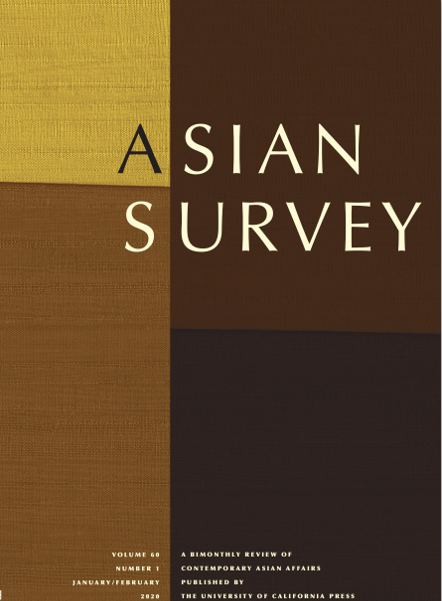

收录于合集

国政学人(International Politics Scholars)本周将隆重推出【国别研究】专栏，推荐内容源于《亚洲调查》（Asian Survey）杂志于2020年初专题推出的世界各国2019年发展综述，这些综述对我们整体把握全球经济、政治与社会发展动态具有较强的参考价值。公众号后台（会话页面）回复“ 亚洲调查 ”即可 阅读本专栏系列文章。
计划更新预告：东北亚：朝鲜、韩国、日本；东南亚：越南、新加坡、马来西亚；南亚中亚：印度、阿富汗；大国研究：美国、俄罗斯，敬请关注。 **
**
作品简介
【作者】 Sung Deuk Hahm，高丽大学教授、韩国总统研究所主席。曾任《韩国期刊》、《韩国社会科学期刊》和《公共行政国际评论》主编，《行政与社会》和《国际公共管理评论》联合主编，《治理》执行主编。
【编译】 阮含含（国政学人编译员，辽宁大学国际关系学院）
【审校】 杨帆
【排版】 王国伟
【来源】
Sung Deuk Hahm（2020）.South Korea in 2019 Little Progress in Denuclearization of North Korea and Poor Macroeconomic Performance. Asian Survey , Vol. 60 No. 1, January/February 2020; (pp. 61-68) DOI: 10.1525/as.2020.60.1.61

期刊简介

《亚洲调查》（Asian Survey）创刊于1961年，是美国唯一的同类学术期刊, 提供了有关南亚、东南亚和东亚国家内当代国际关系的全面回顾，关注亚洲国家发展重大进展中的特殊主题和年度回顾。该期刊是由加利福尼亚大学出版社出版的同行评审学术期刊，以双月刊形式发行。
2019年的韩国：朝鲜无核化进展甚微，宏观经济表现事与愿违
South Korea in 2019：Little Progress in Denuclearization of North Korea and Poor Macroeconomic Performance
内容提要
2019年，韩国国内的两件大事应该是上半年美国总统特朗普与朝鲜最高领导人金正恩为讨论朝鲜无核化而进行的一系列会谈以及下半年和日本的贸易战。总统文在寅以收入为导向的经济增长政策仍未有效刺激经济。事实上，韩国的宏观经济表现仍然停滞不前；2019年的经济增长率低于2%并且没有任何好转的迹象。
关键词： 朝鲜无核化，日韩贸易争端，宏观经济表现不佳，曹国（Cho Kuk）丑闻
文章导读
01
“特金会”
2019年上半年最大的事件就是美国总统特朗普和朝鲜最高领导人金正恩关于朝鲜无核化问题的谈判。第二次美朝峰会于2019年2月27—28号在越南河内召开。这次峰会本应在2018年6月举行的首届新加坡峰会上取得成果的基础上进一步推进朝鲜无核化。但两位领导人没有达成更具体的协议，只是重申了他们立场上的巨大分歧。对于韩国来说，第二次“特金会”的失败让人失望，他们本希望峰会的成功能为金正恩访韩提供有利条件。
更糟糕的是，韩美安全同盟出现了一些破裂迹象，特别是8月22日，由于韩日贸易争端不断，韩国文在寅政府决定不再与日本续签《军事情报保护协定》（以下称“GSOMIA”）。围绕朝鲜半岛的国际安全环境正在恶化：韩国越来越被盟友孤立。许多学者认为，文在寅政府必须扭转这一趋势，维护国家安全的最佳途径是建立牢固的安全联盟。
02
日韩“贸易战”
2019年下半年最大的事件是韩国和日本的贸易战。7月1日，日本首相安倍晋三出人意料的触发贸易争端，收紧了韩国企业生产存储芯片和显示面板所需的三种关键材料的出口监管。日本的经济报复显然是对韩国最高法院2018年10月下令日本公司赔偿二战期间朝鲜强迫劳动受害者的裁决作出的直接回应。这一报复措施给韩国本土半导体产业造成了巨大挫折，而韩国半导体产业的出口额占韩国总出口额的20%。
8月2日，为了加强修改日本战后和平宪法问题上的政治势头，东京扩大了对韩国企业生产半导体和面板显示器所需高科技材料的出口限制，将韩国从享有贸易优惠待遇的“白名单”上除名。作为对日本报复措施的回应，如前所述，韩国决定与日本断绝GSOMIA关系，韩日贸易争端危及两国安全合作，这是二战以来两国关系最糟糕的一次。此外，日本的贸易限制措施也不符合自由贸易原则。在笔者看来，安倍晋三对韩国的贸易战是自我毁灭性的，由于两国高度相互依存，日本也将自食其果。它还将损害全球存储芯片供应链，不仅伤害日本进口商，也伤害苹果和英特尔等全球信息技术公司。
在美国的压力下，韩国方面在11月22日做出了一个令人惊讶的转变，决定重启GSOMIA。然而，韩国提出了以下条件：日本必须在7月份撤销对三种关键工业原料的贸易限制，恢复韩国作为首选贸易伙伴的地位。这一突然逆转使两国有更多时间就悬而未决的双边问题进行谈判。
03
宏观经济表现
2019年韩国经济面临诸多问题，包括经济增长缓慢、出口减少、裁员和收入减少。事实上，宏观经济表现处于停滞状态：2018年国内生产总值为1.619万亿美元，2019年保持在2%以下的增长，没有好转迹象。
韩国出口下滑加剧，对经济带来沉重压力。在经济不确定性增加的情况下，消费价格继续下降，基础设施投资也一直处于低迷状态。由于美中贸易争端持续，韩国10月份出口连续第11个月下降。与日本的贸易战对下滑的出口打击更大。总体而言，对中国（占出口总额的16.9%）、日本（13.8%）和美国（8.4%）的出口下降，对独立国家联合体（24.1%）和越南（0.6%）的出口增加。此外，9月份韩国的消费价格首次下降至-0.4%，这加剧了人们对通货紧缩的担忧。
外部条件恶化，加上国内的反企业环境，迫使当地企业推迟或取消投资决定。因此，韩国的中产阶级面临举步维艰的困境。事实上，2019年第二季度，收入占中位数50%至150%的家庭所占比例降至58.3%。这一数字较2018年下降1.9个百分点，创历史新低。中产阶级稳定性动摇使社会两极分化，阶级矛盾加剧，内需减弱，对国民经济乃至国家生育率产生了不利影响。
毋庸讳言，这样不断恶化的经济活力导致生产、消费和投资的恶性循环。它最终可能会削弱工业竞争力，导致经济崩溃。防止这种毁灭性后果的唯一办法是推动旨在克服包括劳动力市场在内的经济长期疲软的结构性改革，并补充经济增长潜力。鉴于不断恶化的宏观经济表现，7月14日，最低工资委员会投票决定将2020年的最低工资定为每小时8590韩元（7.80美元）。2020年最低工资标准将提高2.9%，为2010年以来的最低水平。此次适度上调反映了一个严峻的现实，即在经济长期放缓的情况下，雇主，特别是小企业和个体经营者正经历着财务困难。此外，文在寅政府需要承认其与收入导向型增长政策有关的政策失误，包括增加工人收入、扩大消费和提高经济增长。可能需要的是通过促进放松管制和创新来全力振兴经济。
04
政治僵局和曹国（Cho Kuk）丑闻
2019年11月9日是文在寅总统60个月任期的第30个月。但在他担任总统两年半后，公众评价情况不容乐观，因为许多人认为他领导的政府没有达到他们的预期。尽管存在问题，但与前任相比，文在寅的工作支持率相对较高。在2019年，他的公众支持率在39%到51%之间。执政的共同民主党（DPK）的每周政党支持率在31.3%至41%之间变化，而主要反对党自由韩国党（LKP）的支持率仅为18%至27%。
然而，政治僵局一直是描述执政的民主党和反对党在2019年关系的关键词。例如，4月份，文在寅总统提交了一份6.7万亿韩元（57亿美元）的补充预算法案以应对经济放缓。而就在4月26日，执政的民主党和三个在野党同意推动一项选举法改革法案，该法案引入了新的比例代表制以及一项设立新机构用于调查政府高官不法行为。尽管最大的在野党自由韩国党强烈反对，但预计2020年4月国会选举之前四个政党会就这些改革法案达成了共识。
这次政治变革使国民议会在改革法案问题上陷入了争吵。自由韩国党在首尔市中心举行了一次大规模集会，呼吁公众反对文在寅的“独裁统治”。对于刚刚向国民议会提交补充预算法案的文在寅来说，自由韩国党的反对来得不是时候。
经过一番周折，立法机关于8月初批准了5.83万亿韩元（49亿美元）的补充预算。补充预算法案在文在寅政府提交国民议会近100天后获得通过。这项补充预算法案的通过应该作为一种提示，它表明了文在寅与在野党合作的重要性，因为他所在的执政党民进党并不占绝对多数。由于这一政治现实，他需要听取在野党的意见，反映他们在管理国家事务方面的声音，以便在通过改革倡议方面争取他们的合作。单靠相对较高的工作支持率不足以让他管理公共事务。
更糟糕的是，9月9日，文在寅任命他的前助手曹国为司法部长，但曹国随后曝出多桩涉嫌腐败的丑闻。媒体报道加上公众对曹家充满负面情绪的情况下，文在寅依然坚持任命他作为司法部长来完成司法改革。这对文在寅来说是一个巨大的潜在政治风险。在他任命曹国为司法部长后，他的声望急剧下降。文在寅的支持率已跌至39%，是2017年5月就职以来的最低水平。公众对曹国的负面情绪和社会意识形态分化加剧而引发的政治斗争，将是文在寅面临的迫在眉睫的问题。
最重要的是，文在寅似乎并没有认识到在野党是治理国家的政治伙伴。由于国会选举定于2020年4月举行，文几乎没有时间重建他的政治形象。因此，他的首要任务应该是与在野党建立政治伙伴关系，以便共同努力振兴经济，同时在议会中推动他的政治和经济改革举措。
本文由国政学人独家编译推荐，文章观点不代表本平台观点，转载请联系授权。


好好学习，天天“在看”
国政学人
支持学术公益与知识传播
微信扫一扫赞赏作者 __赞赏
已喜欢，对作者说句悄悄话
取消 __
发送给作者
发送
最多40字，当前共字
上一页 1/3 下一页
长按二维码向我转账
支持学术公益与知识传播
受苹果公司新规定影响，微信 iOS 版的赞赏功能被关闭，可通过二维码转账支持公众号。